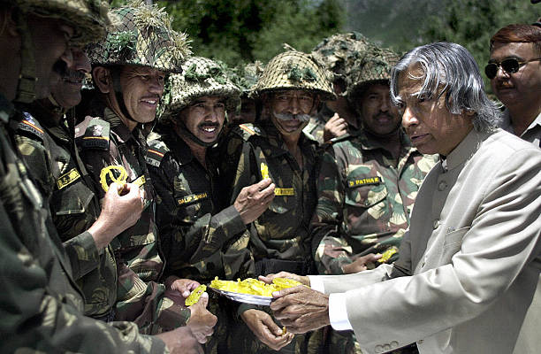
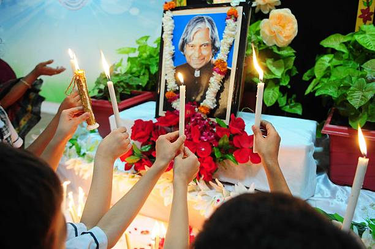

Dr. A. P. J. Abdul Kalam
Missile Man of India | People’s President
“Dream, dream, dream. Dreams transform into thoughts and thoughts result in action.”
About Dr. A. P. J. Abdul Kalam
Dr. Avul Pakir Jainulabdeen Abdul Kalam (1931–2015) was one of India’s most respected scientists, educators, and leaders. Rising from a humble background, he became a symbol of dedication, discipline, and national pride. His life story continues to inspire millions of students to believe in the power of dreams and hard work.
His Journey
Dr. Kalam was born on 15 October 1931 in Rameswaram, Tamil Nadu. He grew up in a modest family and faced many financial challenges during his early years. His passion for learning led him to study physics and aerospace engineering, which laid the foundation for his remarkable career.
Scientific Contributions
- Project Director of SLV-III, India’s first satellite launch vehicle
- Key architect of Agni and Prithvi missile programs
- Major contributor to Pokhran-II nuclear tests (1998)
- Strengthened India’s indigenous defense and space technologies
Presidency of India
Dr. A. P. J. Abdul Kalam served as the 11th President of India from 2002 to 2007. He was popularly known as the “People’s President” because of his close connection with students and the youth of the nation. He emphasized education, innovation, and moral leadership.

Author and Visionary
- Wings of Fire
- Ignited Minds
- India 2020
- My Journey
Inspirational Quote
“If you want to shine like a sun, first burn like a sun.”
Legacy
Dr. A. P. J. Abdul Kalam passed away on 27 July 2015 while delivering a lecture to students. He dedicated his entire life to education, science, and national development. His thoughts, values, and dreams continue to guide future generations.
Conclusion
Dr. Kalam was not just a scientist or a president — he was a teacher, a visionary, and a true patriot. His life teaches us that with humility, perseverance, and dedication, one can achieve greatness and serve the nation.